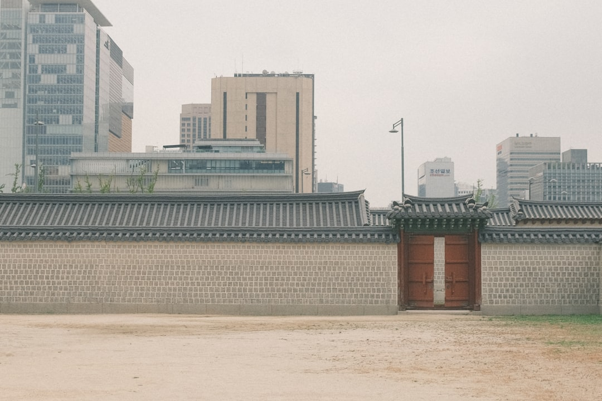

고려아연 갈륨 공장 신설, 中 독점 95% 뚫는다

고려아연은 온산제련소 내 갈륨 전용 생산라인 신설을 공식화했다. 2028년 상업 생산 개시를 목표로, 연간 최대 15.5t의 금속 갈륨을 공급할 계획이다. 현재 한국의 연간 갈륨 수입량은 약 20~25t 수준으로 추정되며, 자체 생산이 본격화될 경우 대중 의존도를 40~50%p 수준까지 낮출 수 있다.
중국은 2023년 8월 갈륨·게르마늄 수출 허가제를 시행했고, 2024년 이후에는 사실상 미국·일본·한국 등 우방국 대상 수출을 전면 차단했다. 글로벌 갈륨 공급에서 중국의 점유율은 94%에 달하며, 대안 공급선으로 캐나다·러시아가 거론되지만 연간 생산량이 각각 10t 이하에 그친다.
고려아연의 갈륨 생산 원료는 아연 제련 부산물인 조산화아연(Crude Zinc Oxide)이다. 기존 아연 슬래그 처리 공정을 활용해 갈륨을 회수하는 구조로, 별도 광산 개발 없이 원료를 확보할 수 있다는 점이 경쟁 우위다. 이 방식은 호주 Trafigura·일본 住友金属 등도 채택하고 있으나, 규모에서 고려아연이 앞선다.
갈륨은 GaAs(갈륨비소) 반도체, GaN(질화갈륨) 전력반도체, VCSEL(수직 공진 표면 발광 레이저) 등 첨단 소자의 핵심 원료다. 삼성전자·SK하이닉스 차세대 전력 반도체 라인, LG이노텍 광소자 공정이 모두 갈륨 기반 소재에 의존하고 있어 국산화 효과는 즉각적이다.
이번 발표의 핵심은 '갈륨 공급'이 아니라 '갈륨 가격 협상력의 한국 내부화'다. 현재 금속 갈륨 국제 가격은 2023년 수출 규제 이후 kg당 200달러에서 400~500달러 수준으로 두 배 이상 올랐다. 고려아연이 국내 조달선을 확보하면, 삼성·SK·LG 등 대형 수요처는 중국발 가격 변동에서 부분적으로 절연된다.
현장에서 보면, 갈륨은 '있으면 싸고 없으면 못 사는' 소재다. 2024년 하반기 한국 전력반도체 업체 2~3곳이 갈륨 재고 부족으로 납기 지연을 겪었고, 이 중 일부는 웨이퍼 단위로 재고 비축에 나섰다. 연 15.5t 생산은 글로벌 수요(약 400~450t/년)의 3~4%에 불과하지만, 국내 수요의 60~70%를 커버하는 수치다.
장기적으로는 고려아연의 갈륨이 '한국 공급 허브'의 첫 번째 퍼즐이 된다. 게르마늄(연 5t 생산 진행 중)에 이어 갈륨까지 자체 조달이 가능해지면, 한국은 미국·EU가 구축 중인 핵심광물 공급망 협의체(MSP, Minerals Security Partnership)에서 '공급자' 지위를 강화할 수 있다.
고려아연은 갈륨·게르마늄 양대 전략광물 생산 기반을 모두 갖추는 유일한 한국 기업이 된다. 2028년 가동 시 연간 갈륨 매출은 시가 기준(kg당 400달러) 약 62억 원 규모지만, 희소성 프리미엄이 붙으면 100억 원 이상도 가능하다. 주가 측면에서도 광물 자원주 리레이팅 수혜가 예상된다.
삼성전기·LG이노텍·SK파워텍 등 GaN 전력반도체·광소자 생산업체는 국내 조달처 확보로 원가 안정성이 개선된다. 특히 EV(전기차)용 GaN 인버터 시장이 2027년 4조 원 규모로 성장 예상되는 상황에서, 소재 안정 조달은 수주 경쟁력과 직결된다.
한국 정부도 MSP 협의체 내 협상 카드를 하나 더 확보한다. 산업부는 2024년 핵심광물 확보 전략에서 갈륨을 6대 우선 광물로 지정했으며, 고려아연 생산라인은 '국내 생산 기반' 항목에 직접 기재된다.
중국 갈륨 수출업체와 중국 내 제련소는 한국 시장 점유율을 일부 상실하게 된다. 현재 한국의 대중 갈륨 수입은 연간 약 20t, 금액으로 약 80억~100억 원 규모다. 고려아연 생산이 본격화되면 이 물량의 60~70%가 국내 대체된다.
단기적으로는 갈륨 국제 현물 가격이 압박받을 수 있다. 공급 우려가 완화되면 현재 400~500달러/kg인 가격이 2028년 이후 300달러 이하로 조정될 가능성이 있으며, 이는 갈륨 재고를 고가에 비축한 일부 트레이딩 업체에 평가손 리스크로 작용한다.
단기(2025~2026): 갈륨 재고 확보 전략을 '중국산 단일 소싱'에서 벗어나야 한다. 캐나다 5N Plus, 독일 Recylex 등 소량 대안 공급선을 병행 개발하고, 고려아연과의 장기 공급 MOU 협상을 선제적으로 추진할 것을 권고한다.
중기(2027~2028): 고려아연 생산 개시 시점에 맞춰 조달 계약 구조를 재편해야 한다. 장기 고정가(Fixed Price) 계약 비중을 높여 2028년 이후 예상되는 가격 하락기에 원가 경쟁력을 선점해야 한다. 특히 GaN 전력반도체, GaAs 웨이퍼 분야 구매담당자는 2027년 4분기를 계약 전환 시점으로 잡아야 한다.
투자 관점: 고려아연 외에도 갈륨 국산화 수혜주로 원익머트리얼즈(GaN 전구체 공급), 티씨케이(SiC·GaN 세라믹 부품) 등을 주목할 필요가 있다. 갈륨 가격 정상화 전(2025~2027년)이 소재 관련주 저점 매수 구간이다.
실제 조달 현장에서는 — 갈륨 수급이 타이트해진 2024년 하반기, 국내 전력반도체 업체들이 웨이퍼 제조사 경유 갈륨 재고를 확보하려 했지만 이미 일본·독일 업체들이 6개월치 이상을 선점한 상황이었다. 공급망 신호는 뉴스 이전에 재고 움직임에서 먼저 나온다. 지금 당장 2차 공급선 계약을 시작해야 한다.
이 포스팅은 쿠팡 파트너스 활동의 일환으로 수수료를 제공받습니다.